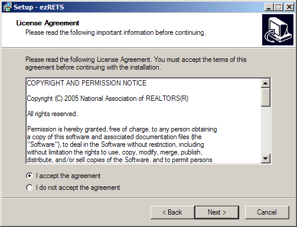
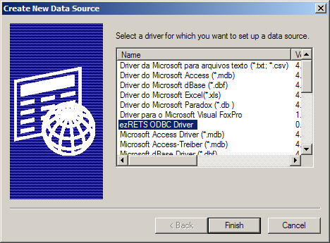
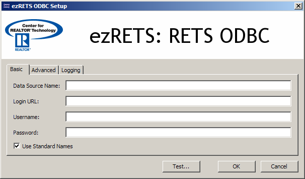
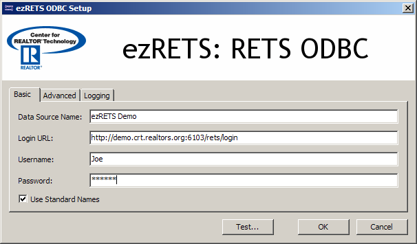
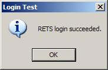
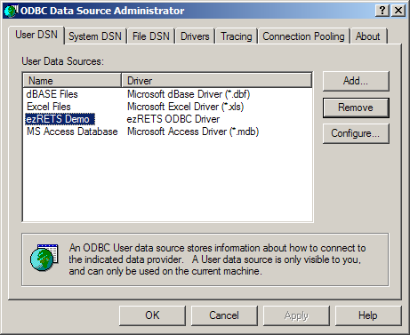

Table of Contents
The ezRETS ODBC driver, from the Center for Realtor Technology (CRT) at the National Association of REALTORS®, was designed to allow ODBC-aware applications to easily query data from any Multiple Listing Service that supports the RETS standard. Many of the programs in Microsoft Office can utilize ezRETS to integrate real estate listing data directly into your own custom documents.
This article shows how to download and install the ezRETS software for Microsoft Windows 2000 and Windows XP, and walks through setting up a new ODBC data source that can query data from CRT's demonstration RETS server. The procedure for connecting to another MLS is similar, but will require different settings; to obtain the proper settings, please contact the MLS's technical support department.
More information about ezRETS can be found at http://www.crt.realtors.org/projects/rets/ezrets/. More information about the RETS standard can be found at http://www.rets-wg.org/.
Download the ezRETS installer from http://www.crt.realtors.org/projects/rets/ezrets/downloads/ and save it to your desktop. When the download completes, You should have an icon on your desktop named something like ezRETS-win32-0.9.4.exe (the name may be different depending on what version is currently available):

Double-click the icon. The first screen of the installer will appear:

Click . The license agreement screen will then appear:
Read the agreement, and then click .
Click the button. The "Select Start Menu Folder" screen will appear:

The installer will create a folder under the section of the menu. This folder will contain shortcuts to the ezRETS documentation and tutorials, as well as an uninstall shortcut. By default this folder will be called "ezRETS". If you wish to call it something else, you can change it here; otherwise, you don't need to change anything on this screen.
Click . The last screen will present a summary of the choices you've made so far:

Click to begin installation. The installation will proceed.
Once it is done, the final screen will summarize what has been done. Click on that screen to close the installer.
This section will walk you through setting up an example ezRETS data source that can connect to the Center for Realtor Technology's demonstration RETS server.
Open up the Data Sources (ODBC) control panel:
Click on the menu on the desktop.
On Windows 2000, click on . On Windows XP, continue to step 3.
Click on . This will either cause another menu to appear, or a folder will open containing your control panel icons.
Click on . If you are in a folder view, you may need to double-click on it.
Click (or double-click) on .
The ODBC Data Source Administrator control panel will appear:

By default, the control panel opens to the User DSN tab, which lists data sources that are available only to you. If you wish to create the example data source so that it is available to all users on the computer, select the System DSN tab instead.
Click the button. The Create New Data Source window will appear.
Select the ezRETS ODBC Driver, as shown above.
Click . The ezRETS ODBC Setup dialog box will then appear:
 Enter the following pieces of information into the fields on the "Basic" tab of the dialog box:
Data Source Name: ezRETS Demo
Login URL: http://demo.crt.realtors.org:6103/rets/login
Username: Joe
Password: Schmoe
This is the connection information for CRT's demonstration RETS server. To obtain the settings necessary for connecting to another MLS, please contact that MLS's technical support department.
Note
The "Advanced" tab contains advanced settings that are required for some MLS sites; if you have trouble connecting to a specific MLS, contact their support personnel to see if any of these settings need to be changed. The "Logging" tab contains settings that can be used for diagnosing problems, and you should only change them if someone from CRT or your MLS requests that you do so. For purposes of this tutorial, do not change the settings on the "Advanced" or "Logging" tabs.
When you are done, the screen should look like this:
Click the Test button to confirm that everything is installed correctly and working. If all is well, you will see:
Click the Login Test dialog box.
Click on the ezRETS ODBC Setup dialog box. This will bring you back to the ODBC Data Source Administrator window, which will now show your new data source in its list:
Click to close the ODBC Data Source Administrator.